作者：创世魂
● 概述
本组件是火山中非常常用的一个组件，共以下类型：大图标列表框，小图标列表框，普通列表框以及报表列表框，通过“类型”属性即可设置。
其列表样式属性分别如下：
大图标列表框效果：
本列表框效果是一种宫格效果，图片在上文本在下。
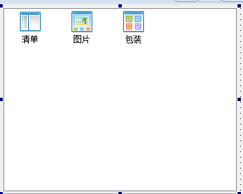
小图标列表框效果：
本列表框效果也是一种宫格效果，但是本效果是图片在左文本在右。
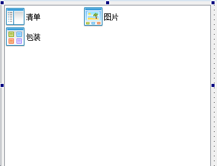
大图标列表框效果：
本列表框效果是一种纵向排列的列表效果，与“列表框”组件不同之处在于，本效果支持显示图片。
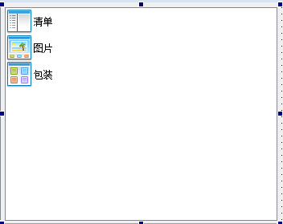
报表列表框效果：
本列表框效果是表格样式，可以展示更多的数据。
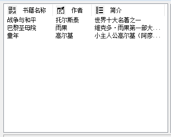
以上四个列表效果，其中最常用的为报表列表框，本篇教程主要介绍如何使用报表列表框。
● 预设数据
1、准备一个图片组，用于表头显示图片。
2、 设置相关属性。
(1) 根据需求来设置表头图片组。
(2) 类型设置为报表列表框。
(3) 最后设置报表列属性，此属性是用于设置报表的列标题信息。
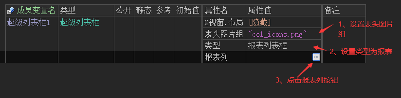
3、 设置报表列标题。
(1) 首先点击向后插入。
(2) 输入标题信息。
(3) 根据需求设置宽度和图片索引。
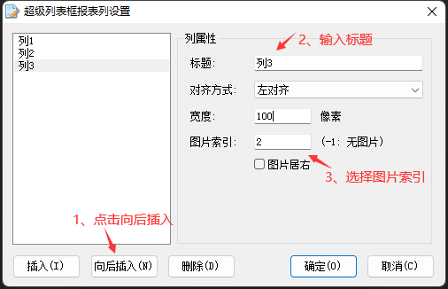
4、列标题设置后效果如下。
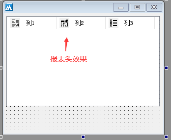
5、设置表项，也就是报表列中的数据。
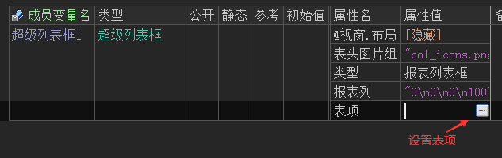
6、 首先插入表项设置列标题，其它属性根据需求设置。
注：其中的图片索引和状态图片分别有“图片组”和“状态图片组”属性指定。
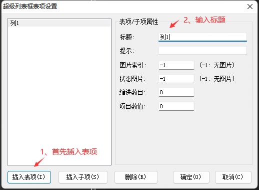
7、 插入子项标题。
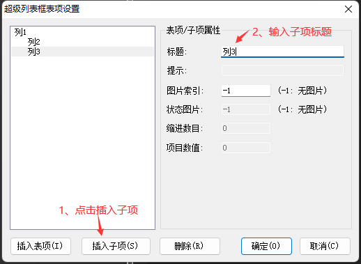
8、 重复操作表项和子项。
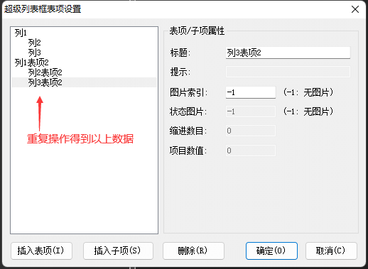
9、 最终效果如下。
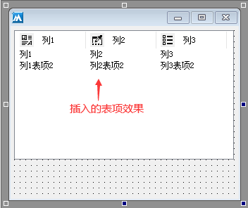
● 添加列标题
帮助文档如下图：
本方法可用于添加列，也可用于插入列，共有6个参数。
参数1：用于控制插入还是添加，默认为添加到尾部，否则插入到指定位置。
参数2：设置列标题。
参数3：设置列宽度。
参数4：设置对齐方式，默认为左对齐。
参数5：设置图片索引，默认不显示。
参数6：设置图片显示位置，默认在标题左侧。
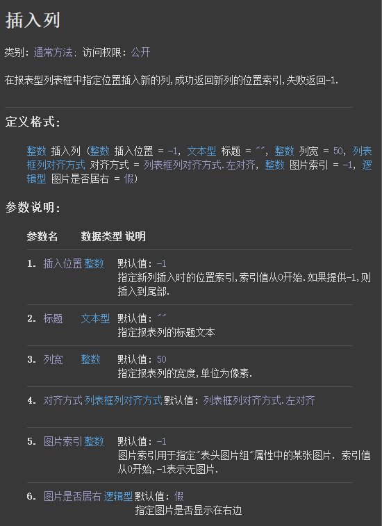
代码编写如下图：
需要插入几列，就调用几次当前方法即可。
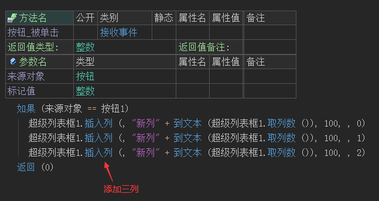
运行效果如下图：
最终超级列表框被插入三列。
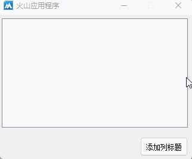
● 添加项目
帮助文档如下图：
添加和插入需要使用“插入表项()”方法，本方法共有6个参数。
参数1：用于控制是添加还是插入。
参数2：设置插入表项的标题。
其余参数根据需求进行设置即可。
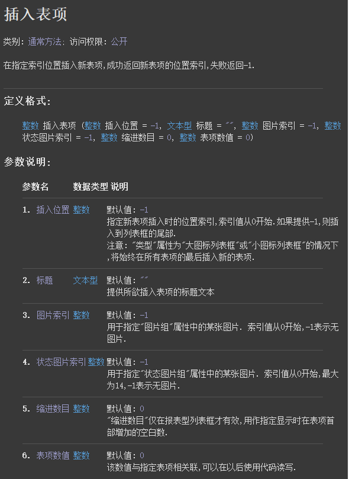
代码编写如下图：
“插入表项()”方法只能插入首列标题，如果需要添加/修改其它列的标题，需要根据返回的表项索引，利用“置标题”方法设置其它列的标题。
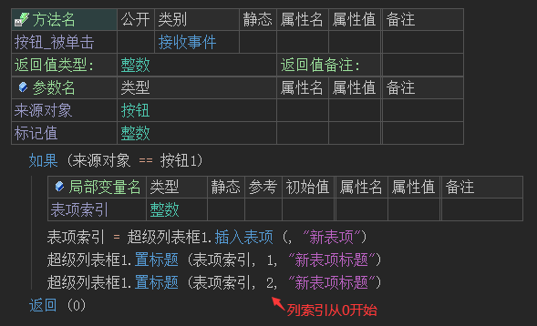
运行效果如下图：
最终表项添加成功。
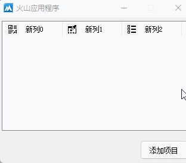
● 修改项目
帮助文档如下图：
修改项目直接使用“置标题()”方法即可，本方法只有三个参数。
参数1：提供要修改的项目索引，从0开始。
参数2：提供列索引，从0开始。
参数3：提供新标题。
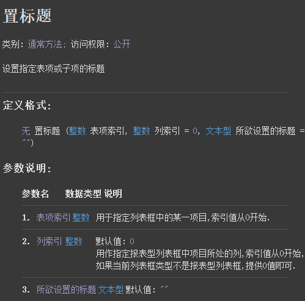
代码编写如下图：
如果想要实现修改选中行的项目，可以设置“整行选择”属性为真，默认为只能选择首列项目。
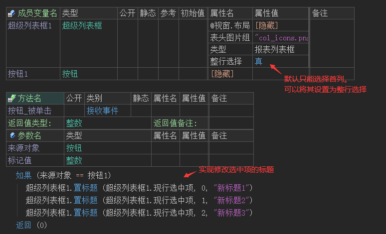
运行效果如下图：
最终可以实现选择修改选中项的标题。
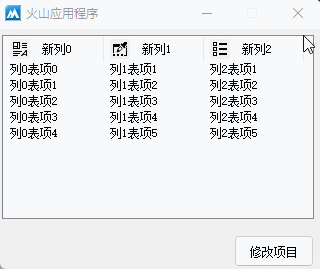
● 删除项目
帮助文档如下图：
删除一个项目使用“删除表项()”方法即可，本方法只有一个参数提供项目索引即可删除。
注：如果需要删除某列可使用“删除列()”方法，提供列索引即可删除。
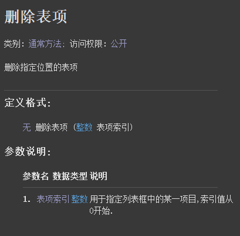
代码编写如下图：
如果要删除选中项，直接结合“现行选中项”读属性使用即可。
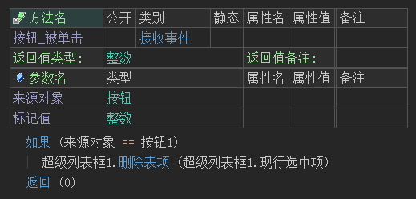
运行效果如下图：
最终可以进行删除选中项操作。
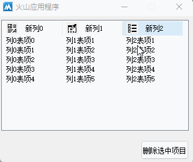
● 查找项目
帮助文档如下图：
想要查找某个项目可使用“查找表项()”方法，本方法共有四个参数，找到指定标题后返回项目索引。
参数1：提供要查找的标题文本。
参数2：提供起始查找索引，默认从报表首部开始查找。
参数3：是否进行精确匹配，默认为真。
参数4：提供查找哪一列的数据，默认为0，即报表首列。
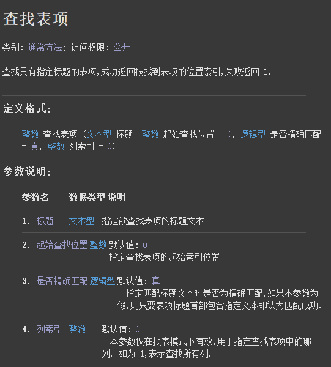
代码编写如下图：
调用本方法根据编辑框的内容查找表项，找到后将其选择。
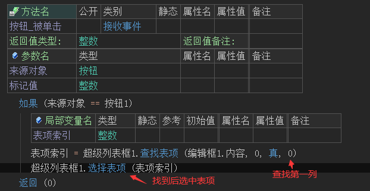
运行效果如下图：
最终表项将被选择。
注：如果为出现选择状态，可以设置列表框组件的“始终显示选择项”属性为真。
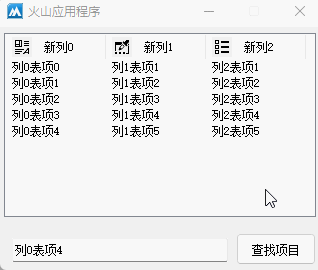
● 取项目标题
帮助文档如下图：
可使用“取标题()”方法取出项目标题，本方法共有两个参数。
参数1：提供表项索引。
参数2：提供列索引。
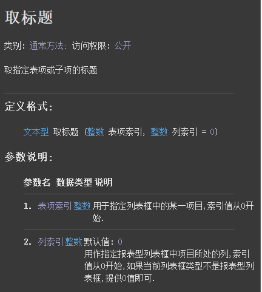
代码编写如下图：
如果想要实现取出整个表项的所有标题，需要循环列数实现。
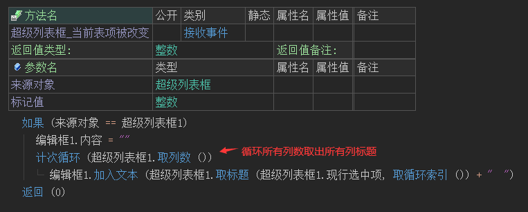
运行效果如下图：
最终当表项选中时，可将所有列的标题显示在编辑框中。
注：如果表项无法进行整行选择，请将“整行选择”属性设置为真。
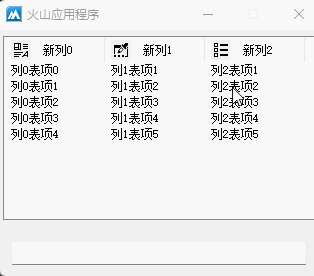
● 编辑项目
代码编写如下图：
编辑项目指直接在报表中编辑首列项目标题，通过设置“允许编辑”属性为真即可实现编辑。
如果需要在任意列实现编辑效果，需要设置“整行选择”属性为真。
添加“结束编辑”事件即可获取编辑后的文本。
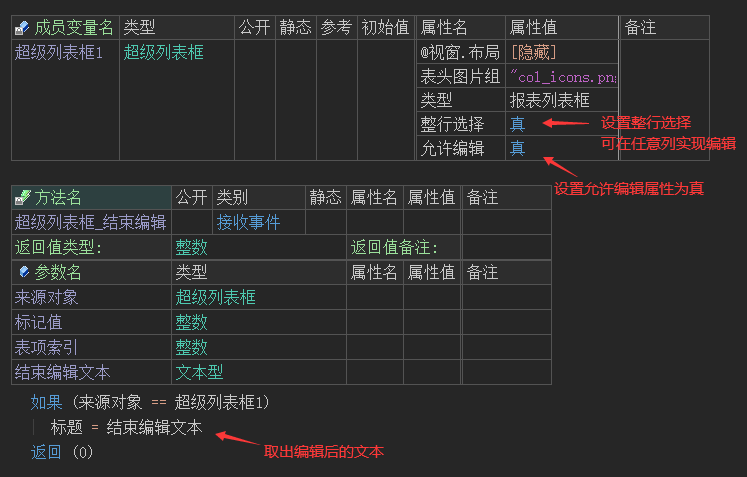
运行效果如下图：
第一次单击为选中表项，当表项选中后再次单击即可进入编辑状态（并非连续双击左键）。
如果需要通过代码进入编辑可调用“进入编辑()”方法，提供表项索引即可编辑某项目。
当编辑结束后，新的标题会显示在窗口标题上。
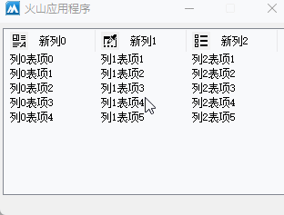
● 编辑子项目
代码编写如下：
编辑子项目相对编辑项目来说，稍微有点复杂，因为编辑子项目暂时不支持直接获取到编辑后的文本，但是通过部分方法和事件结合起来使用也可以轻松拿到编辑后的文本。
1、定义“位置类”成员变量，当鼠标在组件上移动时，将横纵坐标存储到位置变量中。
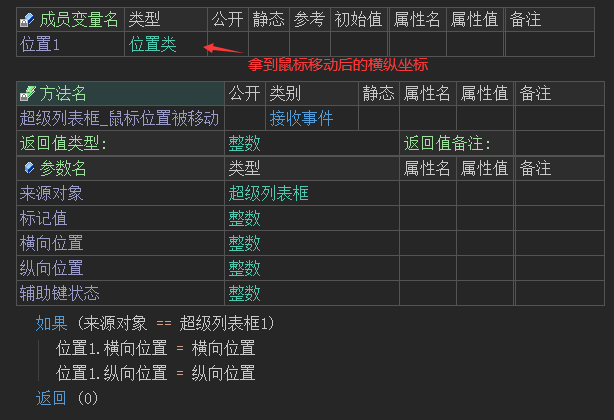
2、需要设置“整行选择”、“允许编辑”和“允许编辑子项目”三个属性值全部设置为真，才能够实现编辑子项目功能。
3、定义类型为“超级列表框检测结果”变量，用于存储鼠标位置在超级列表框上所在的行列数据。
4、定义一个逻辑型变量，用于表示当前是否处于编辑状态，从而用于当编辑状态取消后，取出编辑后的标题。
5、因子项目编辑是需要双击才可以进入，因此可以在“双击表项”事件下，通过“位置检测()”方法，利用提前存储的鼠标位置，即可拿到鼠标位置在超级列表框上所在的行列数据。
6、务必注意将定义的逻辑变量在此事件下设置为真，以便于后续编辑状态的判断操作。
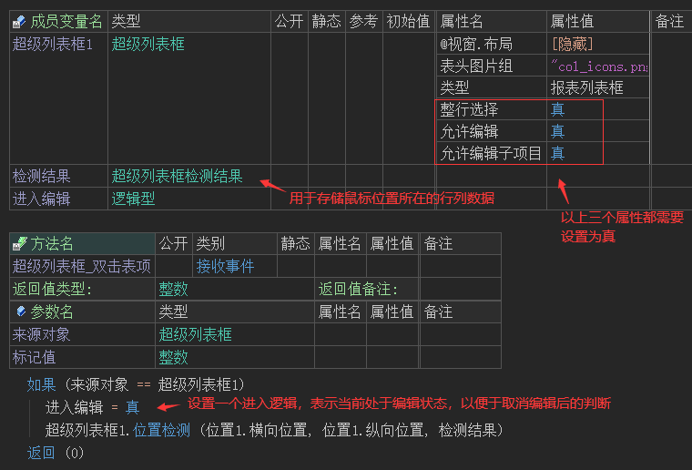
7、取消编辑状态有两个方法，通过鼠标左键点击其它表项或左键点击空白区域，因此需要添加“鼠标左键被放开”和“左键单击表项”两个事件，并在事件中做出同样的判断和取标题的操作。
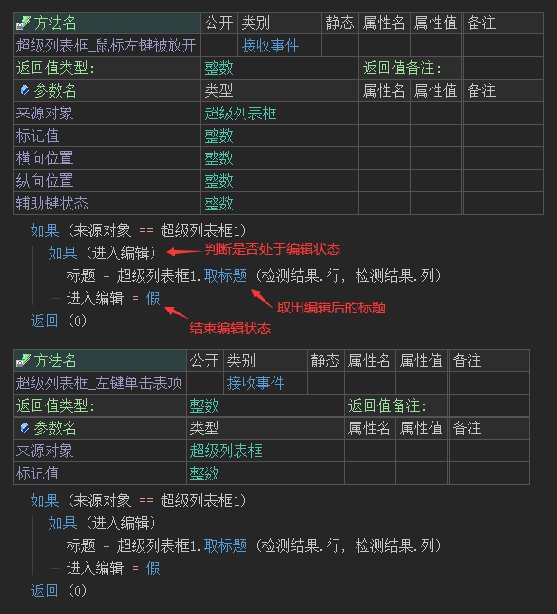
运行效果如下图：
最终当子项目编辑结束后，可以取出编辑后的标题赋值给窗口标题。
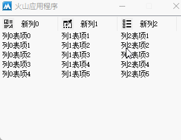
● 显示选择框
帮助文档如下图：
想要超级列表框显示选择框，设置“是否有检查框”属性即可。
注：本属性不支持动态调用。
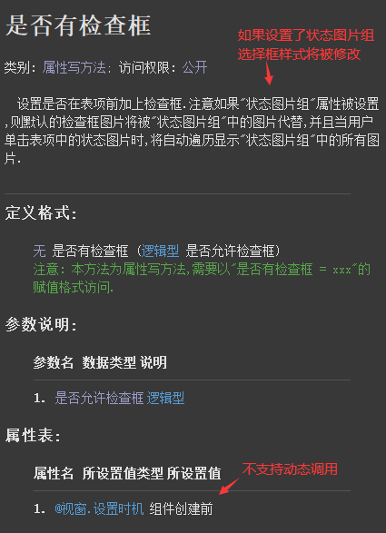
代码编写如下图：
1、首先将本属性在属性表中设置为真。
2、通过“取当前状态图片()”方法可判断表项是否被选择，当方法返回1时，表示当前表项的选择框被选择。
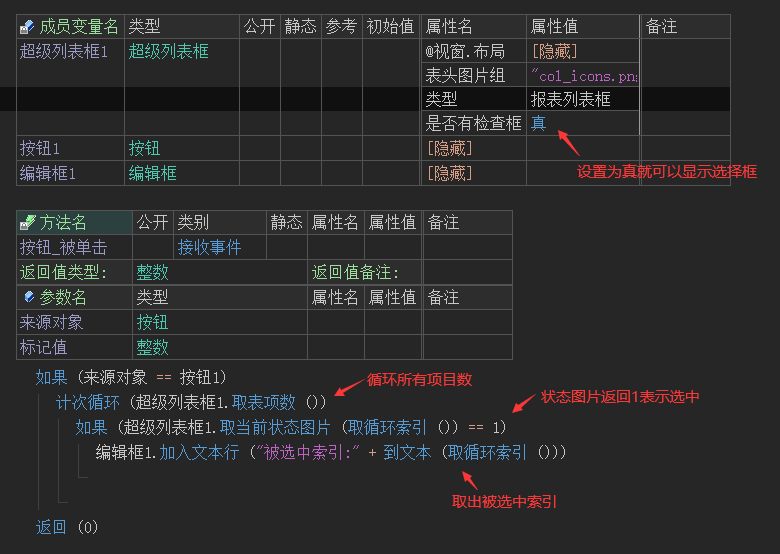
运行效果如下图：
最终可以成功取出所有被选择的项目索引，有了索引之后就可以进行例如：修改项目，删除项目之类的操作。
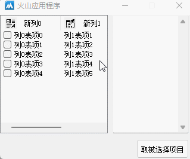
● 多行选择
帮助文档如下图：
通过将“单一选择”属性设置为假，即可让本组件支持非选择框形式的多选效果。
注：本属性不支持动态调用。
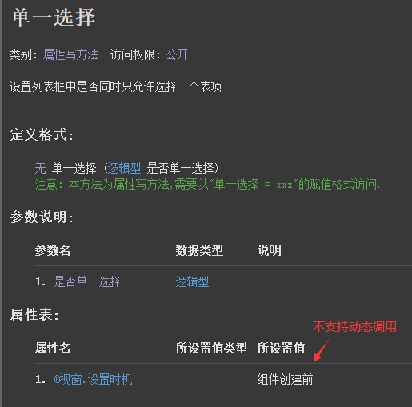
代码编写如下图：
利用“取被选择表项()”方法可取出所有被选择的表项。
如果需要删除所选表项，需要使用逆向计次循环进行逆向删除。
因为取出的表项索引从小到大排列，而表项索引被删除后会自动更新索引，从而只能逆向进行删除。
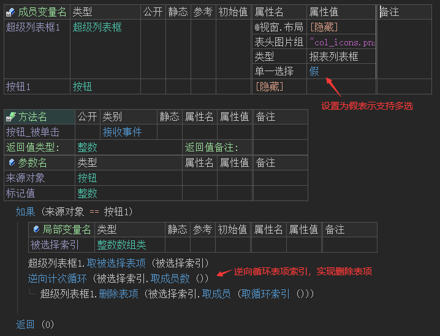
运行效果如下图：
按下ctrl键，鼠标左键点击表项可进行多选操作，最终被选择的表项将被删除。
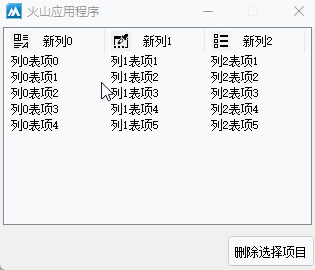
● 项目右键菜单
代码编写如下图：
1、首先设计一个菜单，例如：取标题菜单，用于点击后获取项目标题。
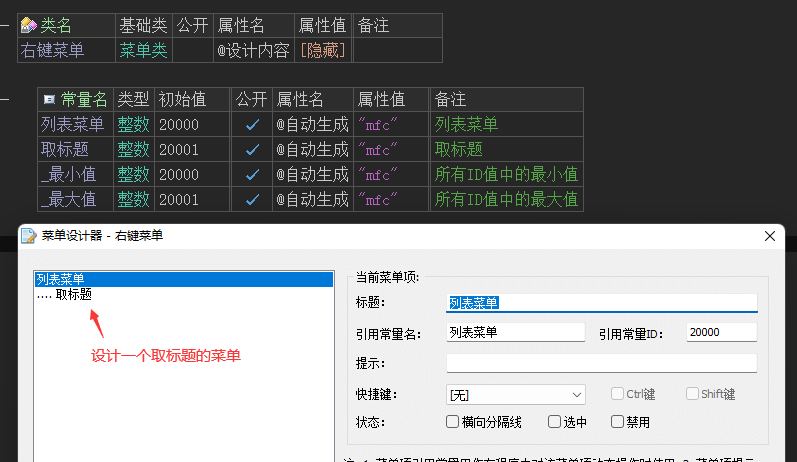
2、设置整行选择的目的，是为了在任意列上右键都可以清晰得知当前是哪个项目右键。
3、添加“右键单击表项”就可以进行弹出菜单操作。
4、添加窗口的“接收到命令”事件，就可以执行菜单事件。
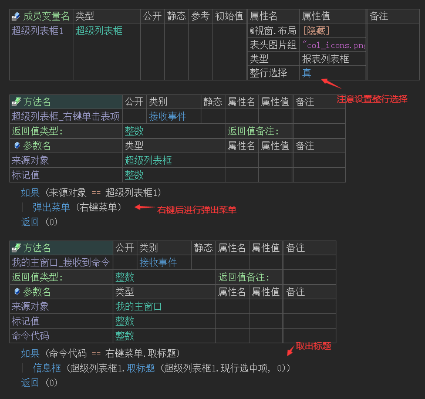
运行效果如下图：
最终可以成功通过菜单获取当前表项的首列标题。
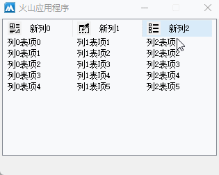
● 修改表项颜色
帮助文档如下图：
通过添加“即将绘制”事件即可修改表项颜色。
目前本事件缺点：无法准确的修改某行某列的某个具体项目的表项颜色，通过“绘制参数”虽然可以控制行列范围，但是后续所有列的都会受到影响。
因此本事件适用于，将整个表项修改颜色。
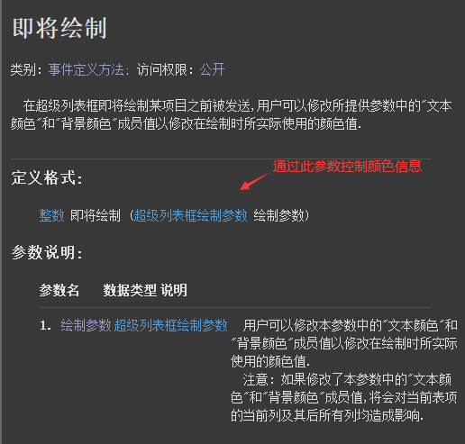
代码编写如下图：
添加本事件后，通过绘制参数的“表项索引”和“列索引”就可以控制颜色绘制范围，然后就可以修改文本颜色和背景颜色。
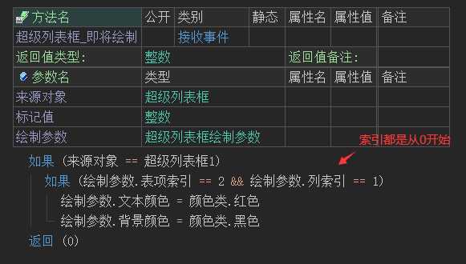
运行效果如下图：
最终列索引1后的其它列也会受影响而改变颜色。
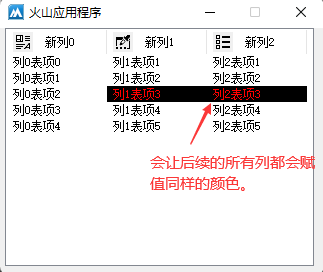
● 保存项目并读取
概述：
目前超级列表框不支持项目数据直接存储和读取，需要利用循环方法将所有表项内容取出后保存。
保存的方式多种多样，例如：可以使用ini配置文件存储，也可以使用xml或json存储。
这里采用json格式来存储表项内容，可选择存储为如下格式：
{
"0": ["列0表项0", "列1表项0", "列2表项0"],
"1": ["列0表项1", "列1表项1", "列2表项1"],
"2": ["列0表项2", "列1表项2", "列2表项2"],
}
其中JSON对象的键名0、1、2序号数字表示表项索引，键值则为一个JOSN数组，用来存储整个表项的所有列的数据。
保存项目代码编写如下：
1、其中需要注意的是“取循环索引()”不支持嵌套使用，所以需要单独定义一个变量来存储，以便于二级循环中访问。
2、当列数未知时，或列数过多时，可以循环列数来进行取标题操作。
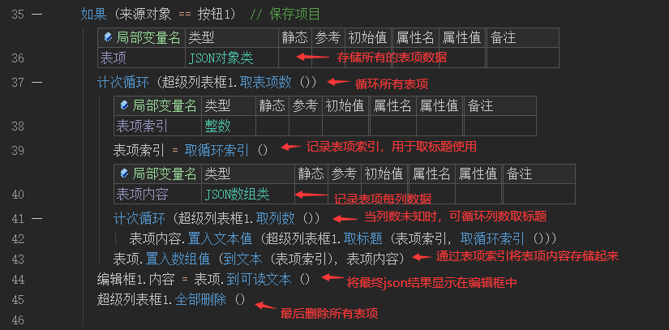
读取项目代码编写如下：
1、“成员数”读属性在JSON对象中用于取出键数量，在JSON数组中用于取出数组成员数。
2、“插入表项()”方法的参数可以全部留空，表示插入一个空表项。
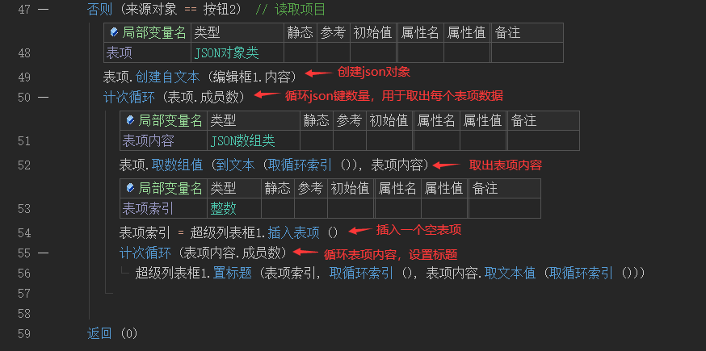
运行效果如下图：
最终可以实现表项的存储和读取。